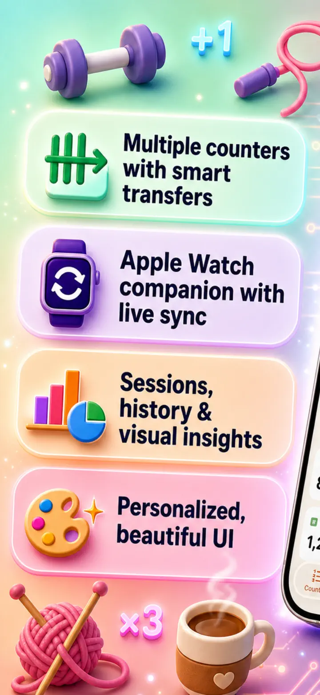
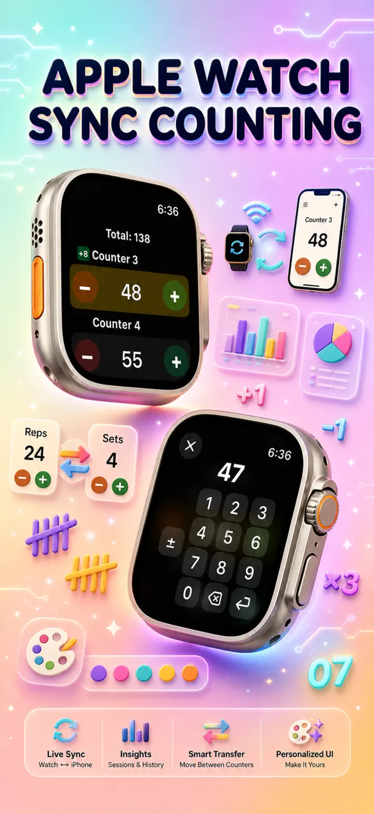
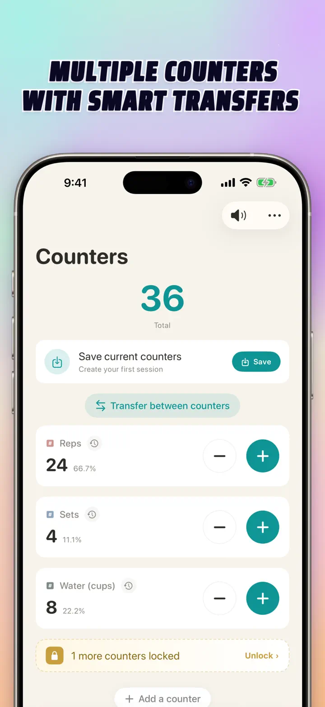
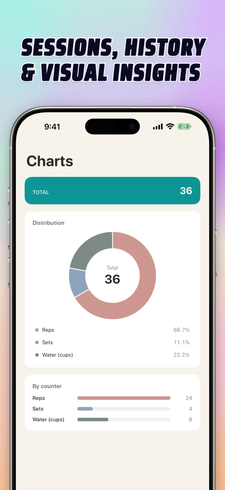
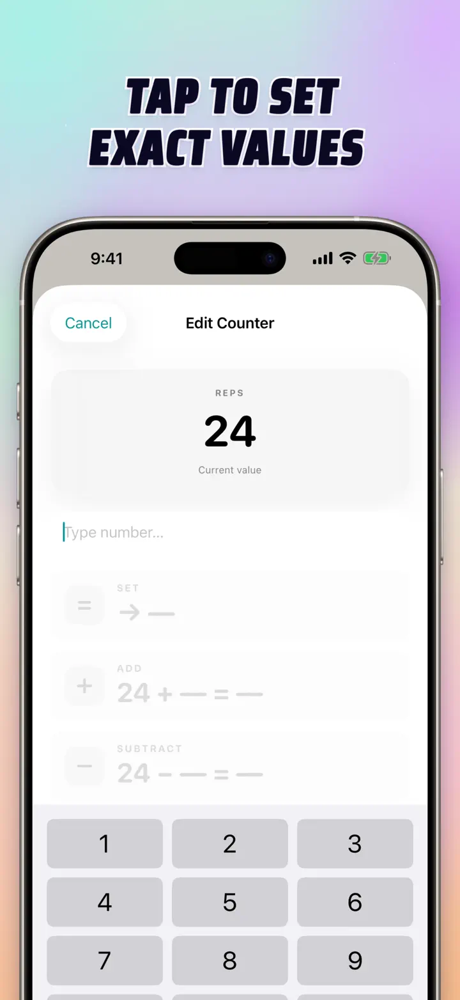
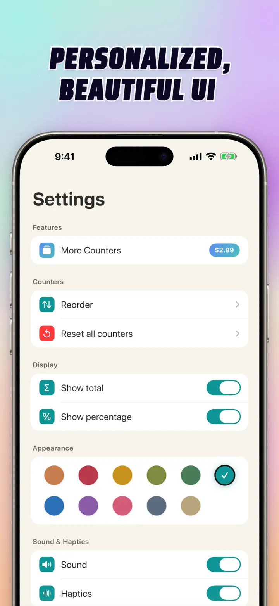
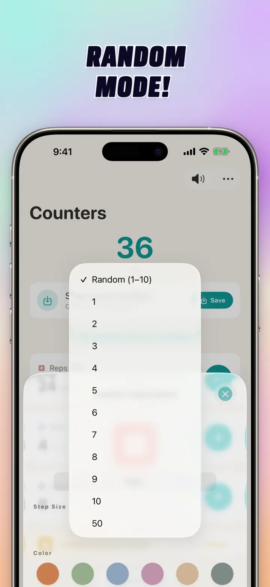

Tally Counter 123
Watch Sync, Clicker & Score
New: Home Screen widgets — tap +/- right on the widget, no app needed. Counter, clicker & scorekeeper with Apple Watch sync, random mode, charts and history.
Download on the App Store
About the app
Tally Counter 123 is a fast digital tally counter, clicker, scorekeeper, random number counter, and habit counter for iPhone, iPad, and Apple Watch. Create named counters with colors and custom step sizes, then count gym reps, knitting rows, rosary or tasbih beads, classroom points, pitch counts, inventory, laps, attendance, and game scores. Everything stays private, local, and offline.
CUSTOM COUNTERS
- Create separate counters for different activities, games, routines, or lists
- Personalize each counter with a name, color, icon, and step size
- Drag-and-drop to reorder busy counter lists
- Tap-and-hold auto-repeat for fast increments
- Works fully offline — no sign-ups, no cloud required
FAST INPUT & BULK TOOLS
- Tap any counter to set a starting value directly
- Bulk Add/Subtract changes a counter by any number in one step
- Transfer moves a value from one counter to another without double-counting
- Live delta preview highlights every change before you save
- Great for one-time counts, recurring routines, and shared scorekeeping
RANDOM MODE
- Let a counter roll a new 1-10 value on every tap
- Add random values with the plus button or subtract random values with the minus button
- Useful for drills, games, random rewards, classroom activities, and practice routines
- Each random tap is recorded in the counter's history
LIVE APPLE WATCH SYNC
- Use the same counters on iPhone and Apple Watch
- Update a counter on your phone and see it on your wrist
- Count from Apple Watch and keep the iPhone view in sync
- Names, colors, icons, values, and step settings mirror between devices
- Native watchOS app, not a companion shell
TOTALS, CHARTS & HISTORY
- Running total across all counters
- Percentage view shows each counter's share of the total
- Interactive bar chart switches between raw counts and percentages
- Per-counter history logs increments, decrements, edits, resets, bulk changes, and transfers
- History can be viewed as a dated log, grouped sessions, or day/week/month stats
- Save and reload counter sets for repeated events, classes, workouts, or games
BUILT FOR iPhone, iPad & APPLE WATCH
- Adaptive layouts for every screen size
- iPad shows more counters at once and supports Split View
- Local-only storage keeps your counts private
- Share counter setups with teammates, students, family, or friends
POPULAR USES
- Gym reps, sets, push-ups, squats, and workout rounds
- Knitting rows, crochet stitches, pattern repeats, and craft projects
- Rosary, tasbih, mala, mantra, meditation, and prayer counts
- Classroom points, attendance, student tallies, and behavior tracking
- Baseball pitch counts, at-bats, laps, races, and sports drills
- Inventory counts, warehouse checks, stocktaking, and cycle counts
- Board games, card games, scorekeeping, and tournament points
- Habit tracking, goal streaks, daily routines, and event headcounts
Download Tally Counter 123 and make every count simple, searchable, and private.
Privacy Policy: https://masawata.net/privacy-policy.html Terms Of Service: https://www.apple.com/legal/internet-services/itunes/dev/stdeula/
Screenshots






Tally Counter 123
New: Home Screen widgets — tap +/- right on the widget, no app needed. Counter, clicker & scorekeeper with Apple Watch sync, random mode, charts and history.
Download on the App Store